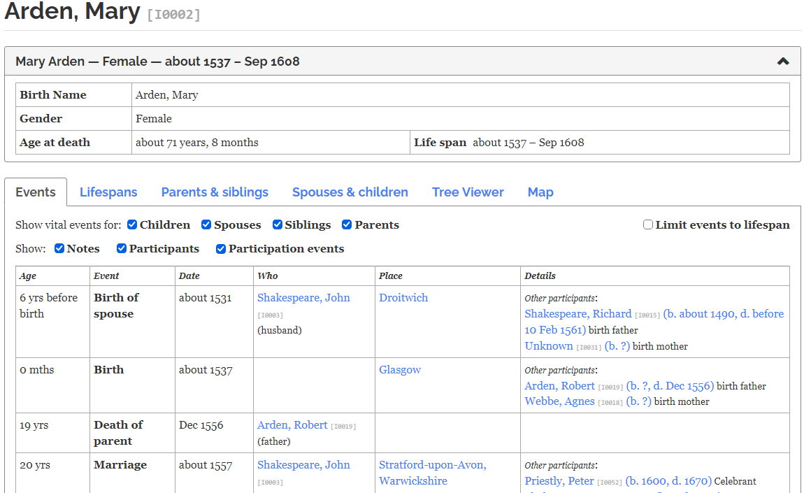
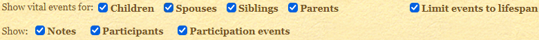
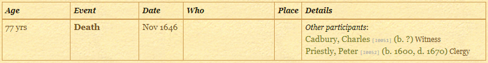
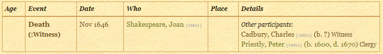
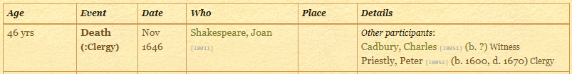
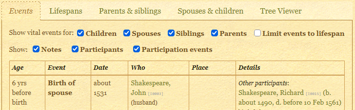
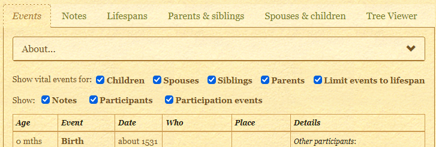
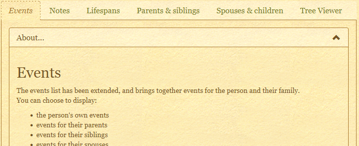

7 Events¶
DWE substantially extends the Events display provided by the original Dynamic Web Report. The Events tab now combines a person’s own events with important events in the lives of close family members, creating a chronological view of the person in their family context.
For example, it can show when a person’s children were born, whether their parents were still alive at a particular time, or how events in the lives of siblings and spouses relate to the person's own events.
The Events table is a timeline display – earliest events are at the top, and later events fall below them, in date order:

Figure 9 - Events table example
The table is like the timeline displays used by many online family-tree sites. The table lists the following events for a person:
-
their individual events as usual, such as birth, residence, occupation, census, news, military service...
-
birth and death events for their direct family:
-
their children
-
their spouses
-
their siblings
-
their parents
-
-
Events in which the person has a role (called Participation events)
The events are combined into a single chronological display. Events without a date are placed at the beginning of the table.
7.1 Filtering the Events display¶
Checkboxes above the Events table allow visitors to control the amount of information displayed. Events can be filtered onscreen without regenerating the website.

Figure 10- Event display filters
The browser remembers the checkbox selections when navigating between person pages and when the pages are reloaded, subject to the browser's local storage settings.
7.2 Filter events for family¶
Events for Children, Spouses, Siblings and Parents can be shown or hidden independently. This helps to see events in the person's life in the context of changes within their family.
Filtering can be useful for people with large families, where displaying every birth and death may otherwise make the timeline quite long.
-
Children – show or hide birth and death events for the person’s children.
-
Spouses – show or hide birth and death events for the person’s spouse or spouses.
-
Siblings – show or hide birth and death events for brothers and sisters.
-
where two people share both birth parents, they are shown as brother, sister or sibling
-
where they share one birth parent, they are shown as half-brother, half-sister or half-sibling
-
If they do not share a birth parent, DWE shows them as non-birth brother, non-birth sister or non-birth sibling
-
The Parents & siblings tab shows the recorded parent-child relationships in more detail
-
- Parents – show or hide birth and death events for the person’s parents.
7.3 Limit events to lifespan¶
The Limit events to lifespan option will restrict the events display to dated events that occurred during the person's lifetime.
-
With this filter off, the table will include events before the person was born such as a parent's birth or events involving family members after the person's death.
-
Events without a date are not included when the display is limited to the person's lifespan (because it is not known if they occurred within the lifespan).
7.4 Filter other information¶
Under Show: there are three independent controls:
-
Notes — shows or hides event notes and associated descriptive details.
-
Participants — shows or hides the other participants details.
-
Participation events — shows or hides entire event rows representing participation in another person's event.
These selections allow a visitor to switch between a detailed display and a shorter chronological list. Turning off Participants hides the participant details but retains the events themselves. Turning off Participation events removes those events from the table.
7.5 Participants¶
In Gramps, several people can be associated with the same event, each with a particular role. These roles may include Primary, Witness, Clergy, Celebrant, or a user-defined role. The additional participants and their roles are displayed in the Details column.
Gramps has a default set of roles, and new roles can be assigned by the Gramps database creator. This feature is described in the Gramps wiki.
7.6 Who and Details columns¶
7.6.1 Who¶
The Who column identifies the principal people associated with an event, excluding the person whose page is shown.
-
For a person's own individual events, such as birth, death or residence, the Who column is normally empty because it is their page.
-
For family events, such as marriage, the Who column identifies the other partner. For events involving relatives, it identifies the relevant family member.
-
For Participation events, the Who column identifies the principal people associated with the event.
7.6.2 Details¶
The Details column identifies other participants and their roles, such as witnesses, clergy or celebrants.
-
A person who has more than one role is listed once, with their additional roles grouped together (for example, Best man, Witness).
-
Additional roles of a primary participant are displayed in Details.
7.7 Participation Events¶
An event in which a person does not have a Primary or Family role is displayed as a Participation event. Its event type appears on the first line, with the person’s role or roles on a second line, for example Marriage followed by (:Best man).
Suppose Joan Shakespeare died in November 1646, with Charles Cadbury recorded as a witness and Peter Priestly as the officiating clergy.
The event appears on their respective person pages as follows. The entries all refer to the same Gramps death event; the (:Participation) label makes it clear that the event did not happen to Charles or Peter, but that they were involved in it.
- Joan Shakespeare’s page: Death event

- Charles Cadbury’s page: Death (:Witness)

- Peter Priestly’s page: Death (:Clergy)

The Who column identifies Joan as the principal person on Charles’s and Peter’s pages.
7.8 Marriage events¶
Marriage is recorded in Gramps as a Family event rather than as a Person event. The Events table displays marriage and other Family events in the person's timeline. This means it is not necessary to add the same marriage event separately to a person's individual events in Gramps simply to make it appear in their Events display.
Other people associated with the marriage, such as witnesses or celebrants, will have the marriage in their own Events tables as a Participation event.
7.9 Maps of Events¶
Maps already existed in DWR. They are available on Person, Family and Place pages when geographical coordinates have been recorded.
-
The Person Map shows locations associated with the person's own events, including marriages and events in which they explicitly participated. Events belonging solely to relatives are excluded.
-
The Family Map shows locations associated with family events and individual events of the parents and children in that family.
-
The Place Map identifies the geographical location of the selected place. It does not show events.
Like DWR, when several events occur at the same coordinates, they are combined into one map marker. Selecting the marker displays the associated people, families and events.
7.10 About…¶
Because DWE adds several controls and family events to the original Events display, you can provide an explanation for people using the website.
When creating the report, an optional Gramps note can be selected using Events note on the DWE Options page. If selected, it is displayed in a collapsible About… section on the Events page. If no note is selected, the About section is not displayed.
The note can explain which family events are included, how the display controls work, or anything else that may help people using the website. See About... notes in Chapter 21 DWE Options for information on selecting and using these notes.
‘About note’ appearance
- No note selected:

- Selected (About is collapsed):

- Selected (About is expanded):

An example of note content is shown at the end of this document.
7.11 Remembering display settings¶
The settings of the check boxes are saved and remembered as you open or reload a page. So, if Siblings is turned off, it is still turned off for the next person you open. Also, if you close a tab, or close the browser, the settings are remembered for next time.
If you already have a couple of person pages open, then changing the settings in one page won’t update the settings of the other opened page, unless/until you reload that other page.
This saved tick behaviour depends on your browser’s local storage settings.